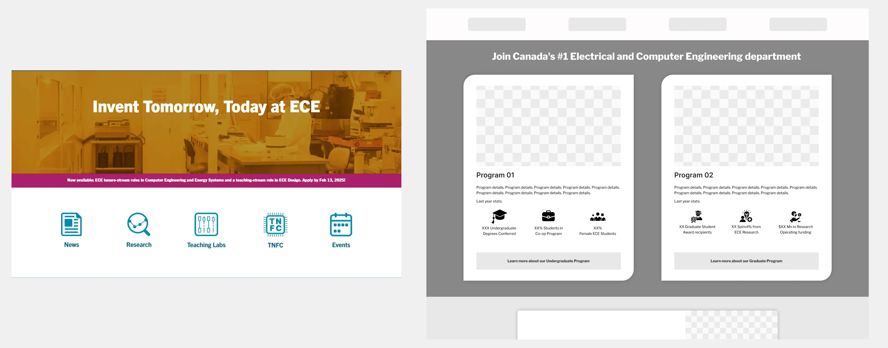
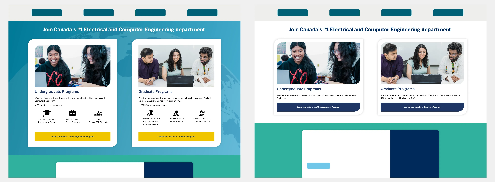
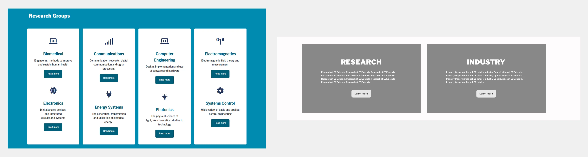
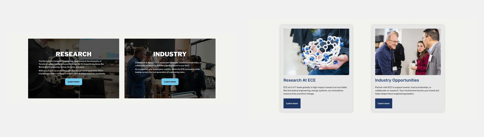

Homepage Redesign: University of Toronto, ECE Department

Summary: Case Study detailing the redesign and WordPress implementation of the University of Toronto ECE department homepage.
Summary: Case Study detailing the redesign and WordPress implementation of the University of Toronto ECE department homepage.
While working on the website's production, I executed the homepage redesign end-to-end: conducting UX research, designing wireframes, prototyping in Figma, presenting iterations to stakeholders, and implementing the final site on WordPress including animations & custom CSS and JS.
Disclaimer: As this public website continues to evolve, the page may differ from the versions shown. I have since left the organization, and any updates made thereafter are at their discretion.
Here's what the page looked like before I worked on it:
Unlike other pages I built for the ECE department, such as the Events or Industry Opportunities pages, the homepage was an existing page that required a redesign. My work involved updating and modernizing the structure, improving content visibility, and implementing interactive features, rather than building it from scratch. I approached it as a 2.0 as opposed to a 0→1 or 1→n design task.


I finalized the homepage narrative and identified the key elements needed to tell the story effectively. I focused on creating a Content Architecture that could make the homepage an "Access Hub".
The sections I designed include:
The Events section was originally just the Hear from the Chair section inherited from the old home page (it connected to the About page of the Department), but the decision to add the events calendar widget was made later. It was added during the second iteration after the initial implementation, as the Events page that I was building was completed only later.
Each section was built as modular blocks in WordPress, giving me (and after I leave, the content team) the flexibility to update videos, images, cards, CTAs, and widgets independently.
Prospective students and partners need to quickly understand what makes the ECE department unique and engaging. They also need easy access to the most important resources on the website.
* Pages I built
Pictured below: What it looked Like(L) and Wireframe(R)

Pictured below: Approved High Fidelity Wireframe(L) and Variation Implemented(R)

Prospective and current students need an engaging way to explore undergraduate and graduate programs.
Pictured below: What it looked Like(L) and Wireframe(R)

Pictured below: Approved High Fidelity Wireframe(L) and Variation Implemented(R)

Prospective students and industry partners need a clear way to explore research opportunities and potential collaborations.
* Page I built
Pictured below: What it looked Like(L) and Wireframe(R)

Pictured below: Approved High Fidelity Wireframe(L) and Variation Implemented(R)

The homepage starts by establishing identity, highlights prospective pathways, connects throuhg the Chair, shows a sample of student life, and ends by showcasing research opportunities. Each scroll reinforces the department’s credibility and is highly relevant for prospective students.
Disclaimer: As this public website continues to evolve, the live page link below may differ from the versions shown above. I have since left the organization, and any updates made thereafter are at their discretion.
I added animations to the individual elements while implementing them on WordPress; Here's how they look:
Click the images below to view the intially approved mockups.
A page is not just a collection of content and a bold banner at the top with a CTA. It has to be a cohesive narrative that guides users.


.png)